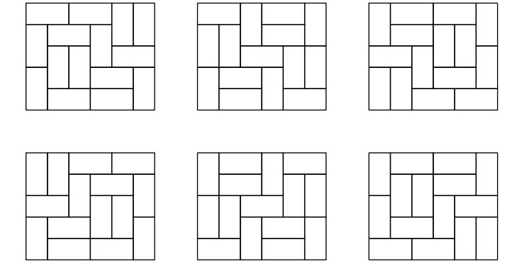

HDU5731. Solid Dominoes Tilings
内存限制：6000/3000 MS (Java/Others) 时间限制：65536/65536 K (Java/Others)
题目描述
Dominoes are rectangular tiles with nice 2 × 1 and 1 × 2 sizes.
The tiling is called solid if it is not possible to split the tiled rectangle by a straight line, not crossing the interior of any tile. For example, on the picture below the tilings (a) and (b) are solid, while the tilings (c) and (d) are not.

Now the managers of the company wonder, how many different solid tilings exist for an m × n rectangle. Help them to find that out.
The tiling is called solid if it is not possible to split the tiled rectangle by a straight line, not crossing the interior of any tile. For example, on the picture below the tilings (a) and (b) are solid, while the tilings (c) and (d) are not.
Now the managers of the company wonder, how many different solid tilings exist for an m × n rectangle. Help them to find that out.
输入格式
The input file contains $m$ and $n (1 \leq m, n \leq 16)$.
输出格式
Output one integer number mod 1e9+7 - the number of solid tilings of m×n rectangle with 2 × 1 and 1 × 2 pavement tiles.
样例
样例输入
2 2
5 6
8 7样例输出
0
6
13514
Hint
All solid tilings for the 5×6 rectangle are provided on the picture below:
